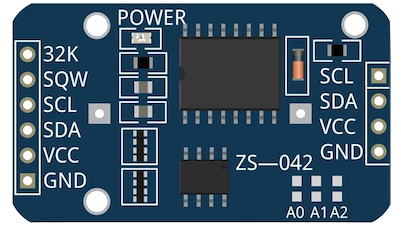
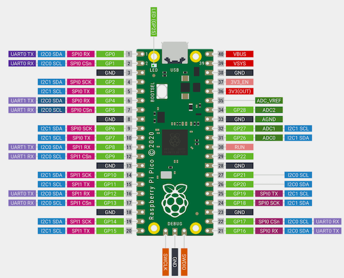
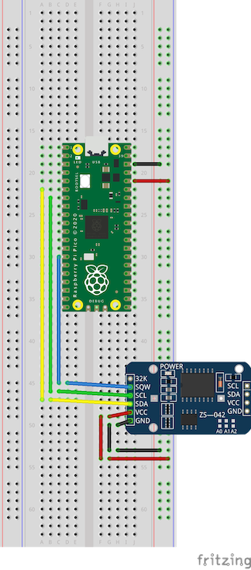
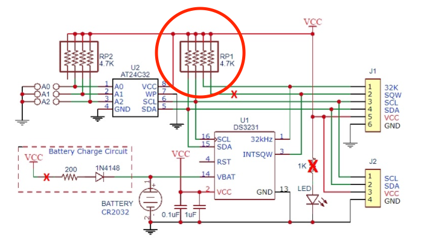
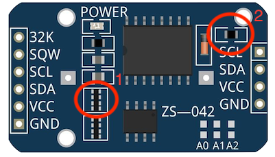

Waking the Pico with an external trigger
In the last post we discussed how you can put your pico to sleep and wake it using the in built clock, bringing everything back into a usable state after waking.
As we noted last time, the Pico has two sleep modes, known as dormant and sleep. According to the official datasheet, the sleep mode draws 1.3mA on average at 25c where as dormant mode draws around 0.8mA at the same temperature, a saving of 38%. Therefore, if we are concerned about conserving as much power as possible when sleeping, for example if we are running of battery power, dormant mode provides a much better option.
The main difference with the dormant mode is that it requires an external GPIO event to bring it back to life, this can be configured to look for a high/low level on a pin, on a rising/falling edge. You can also use the internal RTC interrupt but to do this you must run the RTC from an external clock source. In this post we’ll concentrate on the GPIO event as a trigger.
We’re going to be using much of the code we used before as we still need to save the state of the system clocks and restore them once we awaken from the dormant state, however as we can’t now rely on the internal clock, we need to use an external one. For this we will use the DS3231.
The DS3231
The DS3231 is a low cost accurate I2C realtime clock which looks as follows:

On the other side is a holder for a CR2032 battery which can be used to power the module, retaining the time, when no external power is supplied. That’s not required however for the device to work.
I2C is a very commonly used serial communication bus, in the image above there is a SCL and SDA pin, these are used control the Clock and Data lines respectively. We’re going to be hooking these up to the Pico to allow us to send and receive data to the module.
The SQW pin can be configured to either output a square-wave, perhaps for driving the clock of another device, or as an interrupt pin triggered by an internal alarm. This is what we are able to use to bring out Pico out of deep sleep. The SQW pin is Active-Low, and therefore when the alarm triggers, the Pico will see a low level on this pin (i.e. the pin is grounded when the DS3231 alarm is triggered), bringing it out of dormant mode. We’ll need to tell the Pico later to look for this low signal when telling it to sleep.
First of all then we need to configure our I2C pins:
i2c_inst_t *i2c = i2c0;
static const uint8_t DEFAULT_SDA_PIN = 4;
static const uint8_t DEFAULT_SCL_PIN = 5;
int8_t sda = DEFAULT_SDA_PIN;
int8_t scl = DEFAULT_SCL_PIN;
i2c_init(i2c, 400000);
gpio_set_function(sda, GPIO_FUNC_I2C);
gpio_set_function(scl, GPIO_FUNC_I2C);
We’re going to use GP pins 4 and 5, mapping to i2c0, which is one of two I2C peripherals available to us on the Pico.
The actual physical pins these map to on the Pico though can be seen below:

Pins 6 and 7.
At the time of writing the code, there were no libraries available for the Pico to interface with the DS3231, however there were a number available for the Arduino. One example was this, written by Petre Rodan. This was forked and modified to allow it to be used by the Pico.
With this, we can then configure the DS3231 to trigger an alarm on the SQW after a certain time period has passed. We’re not concerned about setting the time so that it is accurate, only that after a period of time a low signal is triggered on the SQW pin bringing the Pico back to life.
Setting the alarm
The alarm can be set as follows:
void setAlarm(int sleep_mins){
unsigned char wakeup_min;
struct ts t;
DS3231_init(DS3231_CONTROL_INTCN);
//ds3231_readtime();
DS3231_get(&t);
// calculate the minute when the next alarm will be triggered
wakeup_min = (t.min / sleep_mins + 1) * sleep_mins;
if (wakeup_min > 59) {
wakeup_min -= 60;
}
uint8_t flags[4] = { 0, 1, 1, 1 };
// set Alarm2. only the minute is set since we ignore the hour and day component
DS3231_set_a2(wakeup_min, 0, 0, flags);
// activate Alarm2
DS3231_set_creg(DS3231_CONTROL_INTCN | DS3231_CONTROL_A2IE);
}
In the example above, the function can be passed in the number of minutes to sleep. This could easily be modified to sleep for a number of seconds if required. Assuming though you’re concerned about power consumption using this method, it’s likely you’ll be wanting your Pico to sleep for many minutes at a time in order to conserve the maximum out of precious batter life. It simply gets the current time from the clock and calculates the time that it will be when we want to wake up.
When we want to sleep, the code looks as follows:
printf("Setting alarm\n");
//sleep for 1 mins
setAlarm(1);
printf("Alarm set\n");
//Block until print message is sent
uart_default_tx_wait_blocking();
// Ensure SQW pin is held high until alarm/interrupt
gpio_pull_up(10);
//Sleep
sleep_goto_dormant_until_pin(10, true, false);
//We're wake, cleanup
DS3231_clear_a2f();
recover_from_sleep(scb_orig, clock0_orig, clock1_orig);
printf("Recovered\n");
uart_default_tx_wait_blocking();
Wiring everything up
The board layout looks as follows, as you can see from the code above, the Pico has been configured to wake from the GP10 pin, which physically maps to pin 14.

When the alarm is triggered, pin 14 is grounded and the Pico wakes and continues to execute the program.
But, we’re powering the DS3231 when sleeping….
Yes… checking around it seems with the LED of the DS3231 connected, the DS3231 will draw 1.8mA when in VCC operation (powered by the VCC pin). That’s not great, we’re now in a worse position than we were when using the internal RTC of the Pico to wake itself, which was drawing 1.3mA. We could desolder the LED, bringing the consumption down to 0.36 mA however. That still means draining the same battery which we are using to power the Pico.
The DS3231 has a CR2032 battery holder, can we use that to power the module when the Pico is dormant? We can… but we’re going to have to make a few changes.
When you try this, by disconnecting the VCC pin and inserting a battery, the Pico will hang when trying to communicate with the DS3231.
Luckily, there are a few others out there who have also tried this who have helpfully left details about how the issues can be resolved on various threads on the Arduino forums.
This thread and the linked post in particular mentions this blog post. In another Arduino forum post, jremington again helpfully describes what you need to modify on the DS3231 to allow it to operate in low power mode (via the CR2032 battery) and still be able to generate interrupts via the internal alarm.
The problem
As you can see from the following schematic helpfully provided by ShermanP in this post, the VCC line with a resistor pack is used to hold up the SQW, SCL and SDA pins. Without VCC being powered, this resistor pack becomes a pull down resistor, preventing I2C from working (as well as the SQW interrupt if we could communicate at all with the module to set it).

The solution
Firstly, you need to break out the soldering iron and desolder the part marked 1 as below:
(if you don’t have a soldering iron I’ve seen people mention that you can break it off using a pencil)

1 must be removed so that the SQW continues to operate when the chip is battery powered (as well as allowing I2C comms to still work). Without removing this the SQW line will remain in a LOW state. See here for example of someone who had this issue and fixed it by removing this resister block.
2 is removed in the blog post as above due to it supplying a trickle charge to the battery when the module is powered by the VCC pin (which is not safe when using a non-rechargable battery). However there are two sections in the blog which have been updated by the author over the course of time since the original blog was posted. These two sections are interesting:
2018:
I made an error during some recent run tests, where I forgot to connect the RTC’s Vcc line jumper to the digital pin for power (see addendum: 2017-04-15) . The test ran without a hitch for several days (>6000 RTC temp readings & alarms) with the Vcc pin left floating, and power provided only through the Vbat line. I had assumed that high-speed I2C communications would fail in this situation, but after digging through the data sheet – it turns out that the DS3231 is fully functional on Vbat.
2019:
So if you are OK with simply running down the CR2032 battery (which should run for months with an infrequently pulsed 80uA load during the I2C comms…) – then you don’t need to go through the extra circuitry I described above: you can simply kick off the smd resistors, cut the Vcc leg – and you have an RTC module that is pulling no power at all from the main power supply!
With my own testing for this writeup, I removed 1 and 2 and did not cut the line to VCC, everything appeared to work fine with this. You might like to try not removing 2 as we are not longer supplying power via VCC then we shouldn’t need to worry about trickle charging the battery. 1 is certainly required so that the SQW pin will stay high unless the interrupt is triggered by the alarm and so I2C comms work.
As we’ve now removed the onboard pull-up resisters on the DS3231 as part of 1, we need to ensure the pins I2C on the Pico are pulled up so that I2C comms can still work. This is accomplished with:
gpio_pull_up(sda);
gpio_pull_up(scl);
We also need to do the same for the SQW pin, in this case GPIO pin 10
gpio_pull_up(10);
With this in place and the modification made to the DS3231, we can now insert a CR2032 battery into the module and disconnect the VCC pin (red wire in the above diagram). Rather than removing the wire entirely, you may want to ground it (connect it to the same row as the black wire, the negative strip).
Finally
This demo has shown how it’s possible to awaken the Raspberry Pico using an external trigger, in this case a DS3231. Using a single AA battery would allow the Pico to sleep for approximately 104 days (0.8mA consumption in dormant mode, 2000mAh battery capacity in ideal conditions).
The full code for this demo can be found here. Please leave an issue on the repository if you have any comments or suggestions.